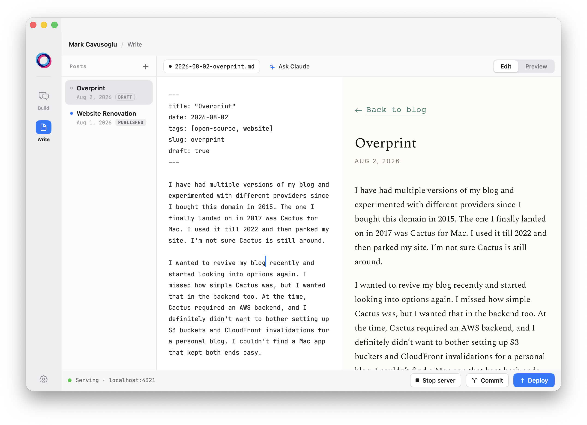

I have had multiple versions of my blog and experimented with different providers since I bought this domain in 2015. The one I finally landed on in 2017 was Cactus for Mac. I used it till 2022 and then parked my site. I’m not sure Cactus is still around.
I wanted to revive my blog recently and started looking into options again. I missed how simple Cactus was, but I wanted that in the backend too. At the time, Cactus required an AWS backend, and I definitely didn’t want to bother setting up S3 buckets and CloudFront invalidations for a personal blog. I couldn’t find a Mac app that kept both ends easy.
So… I built one! Overprint, a native Mac blogging app.
My main aim with Overprint was to have everything in one place and focus on only writing. Here are some of the main features:
Write in markdown with auto-save and preview the site live as you type
Claude built-in: use Claude for editing the post directly (e.g. for grammar fixes) or talk to Claude in Build mode to change the website (e.g. colors, themes, and pretty much anything else)
Commit and deploy from inside Overprint and watch it go live automatically
No need to have Sublime Text, Claude app, Terminal, Chrome open and switch between them. Distraction-free writing.
This very post looks like this in Overprint:

The entire setup doesn’t cost a dime extra for the user. The backend is GitHub Pages, so hosting is free. Overprint pushes to main for version control and to the gh-pages branch to serve the site automatically. All you need to do is click Deploy. Claude also uses your current plan so no need to pay for API usage.
I picked the name because of what overprinting means in printing: laying one color over another so the colors combine, and the logo is two rings doing exactly that.
I made it totally free and open source. Here is the landing page and here it is on GitHub. If you end up finding it useful, a star on GitHub would make my day.